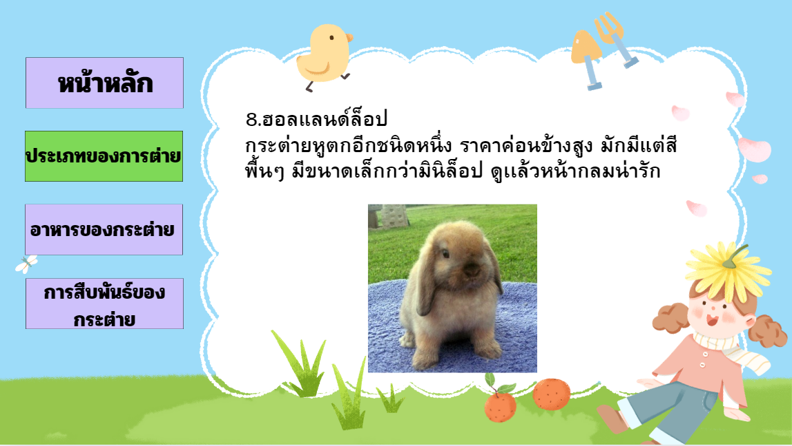

ประเภทของกระต่าย
1.กระต่ายไทย
เป็นกระต่ายพื้นบ้านของประเทศไทยคับ ลักษณะตัวใหญ่ มีหลากหลายสี ว่องไวปราดเปรียว หูยาว หน้าค่อนข้างจะกลม มีกล้ามเนื้อขาที่แข็งแรง สามารถกระโดดได้สูง2.นิวซีแลนด์ ไวท์ แรบบิท
เป็นกระต่ายพื้นเมืองของประเทศนิวซีแลนด์ ลักษณะตัวใหญ่กว่ากระต่ายไทย มีขนสีขาวจนถึงเหลืองอ่อนๆ หูยาว ตาแดง มีลักษณะลำตัวอ้วนตัน ใช้สำหรับเป็นอาหารและการทดลอง3.ไลอ้อนเฮดท์
เป็นกระต่ายที่ตัวใหญ่ มีขนเป็นแผงคอจึงทำให้ดูเหมือนสิงโต ตัวอ้วน น้ำหนักมาก มีหลายสี4.เท็ดดี้แบร์
เป็นกระต่ายที่มีขนาดกลางๆ มีขนฟูทั่วตัว ดูเเล้วน่ารัก มีหลากหลายสี พบได้ง่ายในท้องตลาด5.วู๊ดดี้ทอย
เป็นกระต่ายขนาดค่อนข้างเล็ก มีขนนุ่มๆฟูๆกระจายไปทั่วตัว คล้ายๆเท็ดดี้แบร์ แต่จะตัวเล็กกว่า มีหลายสี อาจหาได้ยากกว่าเท็ดดี้แบร์6.เจอร์รี่วู๊ดดี้ทอย
เป็นกระต่ายพันธุ์ผสม มีขนนุ่ม ฟูไปทั่วตัว ตัวเล็ก มีหลากหลายสี ราคาค่อนข้างสูง และหาได้ยากตามท้องตลาด7.มินิล็อป
เป็นกระต่ายหูตกชนิดหนึ่ง มีขนาดกลางๆ ลำตัวค่อนข้างอ้วนกลม ขนจะยาว หาเจอได้ง่ายตามตลาด8.ฮอลแลนด์ล็อป
กระต่ายหูตกอีกชนิดหนึ่ง ราคาค่อนข้างสูง มักมีแต่สีพื้นๆ มีขนาดเล็กกว่ามินิล็อป ดูเเล้วหน้ากลมน่ารัก9.เฟรนซ์ล็อป
เป็นกระต่ายหูตกพันธุ์ใหญ่ที่สุด ลำตัวอ้วน ตัน ตัวใหญ่มากๆ หาได้ยากในเมืองไทย10.อิงลิซล็อป
กระต่ายหูตกที่ดังที่สุดในอังกฤษ ในประเทศไทยต้องสั่งนำเข้ามาเท่านั้น หูจะยาวกว่าลำตัว ขนจะสั้นเกรียนไปทั่วทั้งตัว11.ดัชต์
เป็นกระต่ายพันธุ์กลางๆอีกชนิดหนึ่ง ขนสั้น ลำตัวเปรียว ราคาก็ค่อนข้างสูง หูจะยาว กระโดดได้สูง12.มินิเร็กซ์
เป็นกระต่ายใหญ่ มีขนแบบกำมะหยี่ ราคาค่อนข้างสูง ลำตัวยาว เปรียว วิ่งเร็ว13.โปลิส
มีต้นกำเนิดที่เบลเยี่ยม หูสั้น ปลายหูชนกัน ตัวเล็ก ราคาค่อนข้างสูง